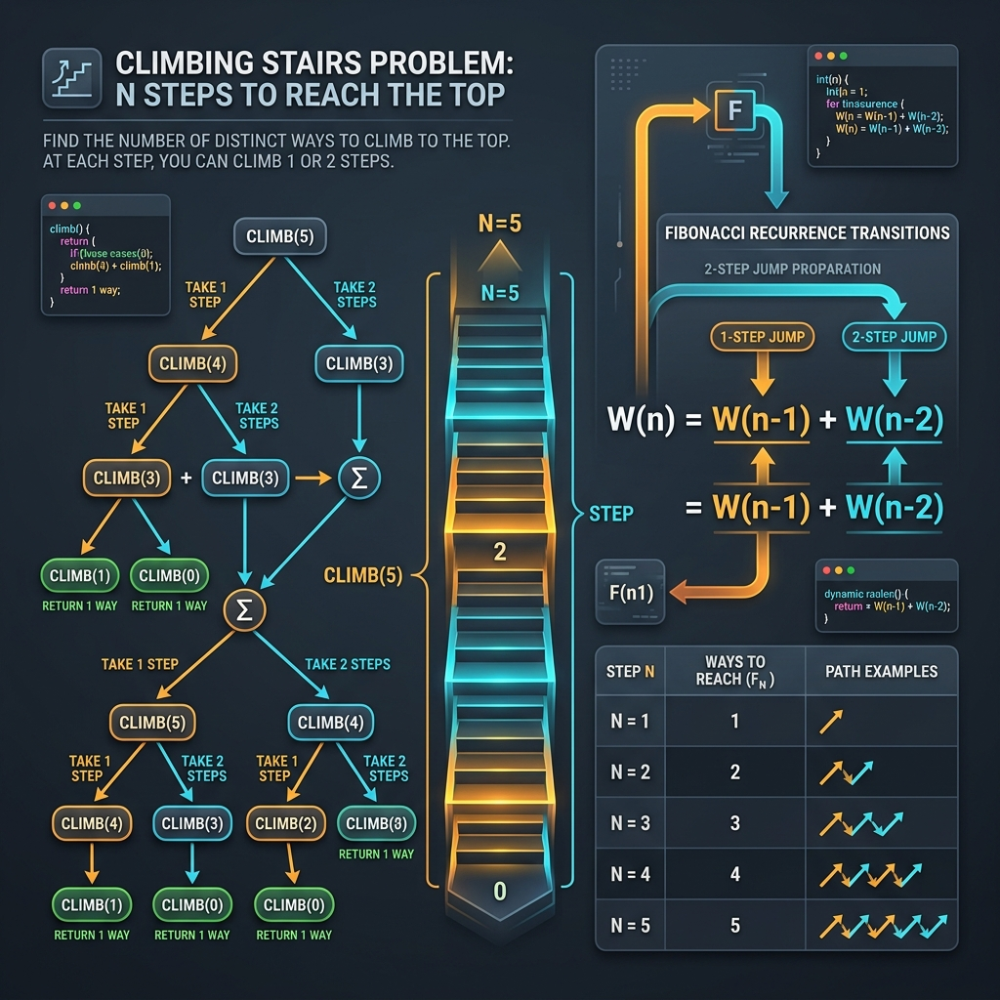

Dynamic programming often sounds intimidating, but it is easiest to understand when applied to simple, physical scenarios. A perfect example of this is the classic Climbing Stairs problem. In this puzzle, you are standing at the bottom of a staircase with n steps. Your goal is to reach the top. At any point, you can choose to climb either 1 step or 2 steps at a time. The challenge is to find how many distinct ways you can reach the very top.
This problem is a classic introduction to dynamic programming because it is built entirely on subproblems. To land on the final n-th step, your last move must have been either a single step from the (n-1)-th step or a double step from the (n-2)-th step. Consequently, the total number of ways to reach step n is simply the sum of the ways to reach the last two steps before it. This mathematical relationship, Ways(n) = Ways(n-1) + Ways(n-2), is identical to the Fibonacci sequence.

Think of this problem through a simple metaphor of a small frog hopping up a flight of stairs. If the frog is aiming for the 4th step, there are only two positions it could have hopped from: the 3rd step (using a 1-step hop) or the 2nd step (using a 2-step hop). The frog cannot reach the 4th step directly from the ground or the 1st step in a single move. Because of this, counting all the distinct paths to the 4th step is as simple as combining all the paths that lead to the 2nd step with all the paths that lead to the 3rd step.
The Algorithmic Approaches
We can solve this problem using two distinct levels of optimization:
1. Standard Dynamic Programming (Linear Space)
We can create a memoization array, dp, where each index i stores the number of ways to reach the i-th step. Starting from the bottom, we fill the array step-by-step using our recurrence relation, dp[i] = dp[i-1] + dp[i-2]. This approach is clean and runs in O(n) time, but it uses O(n) auxiliary memory to store the array.
2. Space-Optimized Dynamic Programming (Constant Space)
If you look closely at the recurrence relation, you'll realize we only ever need the results of the last two steps to calculate the next one. We don't actually need to remember the entire staircase history. Instead of storing a whole array, we can keep track of just two variables: first (the ways to reach the step before last) and second (the ways to reach the immediate previous step). By updating these two values as we walk up, we reduce our space complexity to O(1) while maintaining the O(n) running time.
Step-by-Step Execution Walkthrough
Let's trace this space-optimized algorithm for a staircase with n = 5 steps:
- Initialize: Since
5is greater than2, we set up our base variables:first = 1(ways to reach step 1) andsecond = 2(ways to reach step 2). - Step 3: The ways to reach step 3 is
first + second = 1 + 2 = 3. We shift our window forward:firstbecomes2, andsecondbecomes3. - Step 4: The ways to reach step 4 is
2 + 3 = 5. We shift the window again:firstbecomes3, andsecondbecomes5. - Step 5: The ways to reach the final step is
3 + 5 = 8. We shift variables:firstbecomes5, andsecondbecomes8. - Done: The loop terminates, and we return our final answer:
8distinct ways.
How the Code Works
Let's look at the key details of the code logic:
if (n <= 2) return n;: Immediately handles the base cases where the number of stairs is 1 or 2, avoiding loop overhead.int third = first + second;: Represents the core Fibonacci relation, combining the subproblem results of the two previous steps.first = second; second = third;: Shifts our sliding window variables forward by one step, preparing them for the next iteration.
Java Implementation Code
Here is the complete Java implementation of this optimized approach. The code immediately handles the base cases for staircases with 2 or fewer steps, then runs a simple loop to calculate the ways dynamically.
package io.practise.dsa;
public class ClimbingStairs {
// Space-Optimized Dynamic Programming: Time O(N), Space O(1)
public int climbStairs(int n) {
if (n <= 2) {
return n;
}
int first = 1; // Ways to reach step 1
int second = 2; // Ways to reach step 2
for (int i = 3; i <= n; i++) {
int third = first + second;
first = second;
second = third;
}
return second;
}
public static void main(String[] args) {
ClimbingStairs solver = new ClimbingStairs();
int n = 5;
System.out.println("--- Climbing Stairs Demonstration ---");
System.out.println("Number of stairs (n): " + n);
int ways = solver.climbStairs(n);
System.out.println("Total distinct ways to climb: " + ways); // Expected: 8
}
}
Conclusion & Complexity Analysis
By transitioning from a naive recursive design to an iterative sliding-window approach, we resolve the problem optimally. The final solution runs in linear O(n) time and uses a constant O(1) extra space. This makes it an incredibly efficient solution, showing how identifying and caching overlapping subproblems can dramatically optimize code performance.